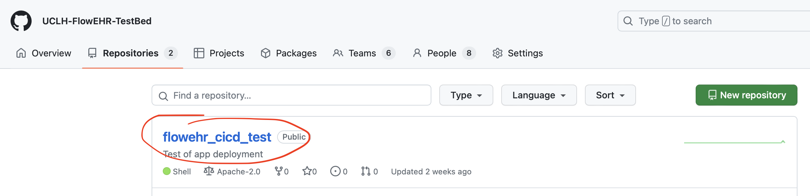
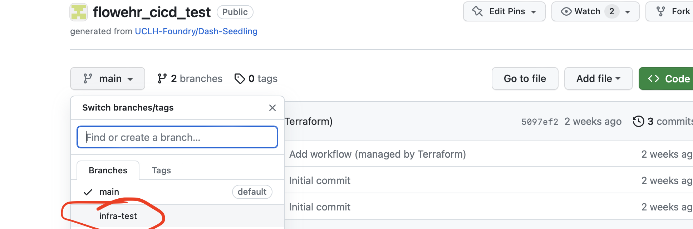
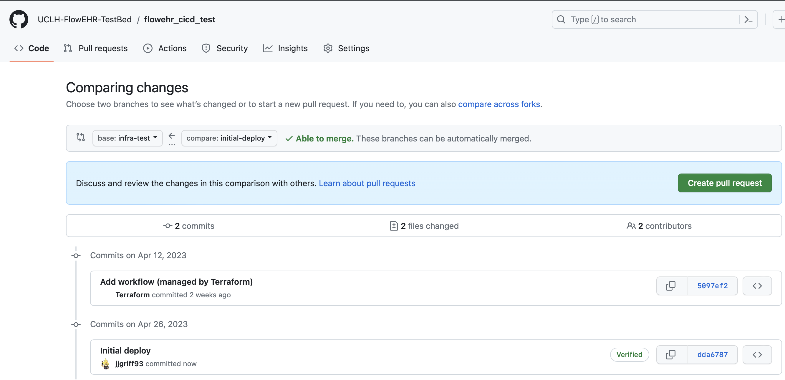
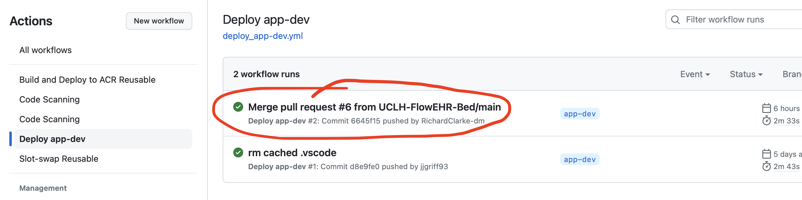
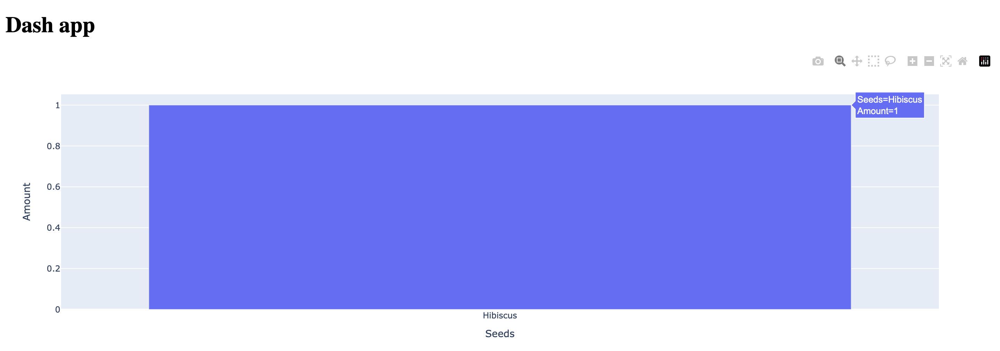

Author & deploy a FlowEHR App
Let’s deploy your first FlowEHR App!
1 Pick a 🌱 Seedling
The first step is to pick a seedling. A seedling is a pre-built FlowEHR App template that you can use as a starting point for your own app. You can find a list of seedlings in the UCLH Foundry GitHub Org. Which you use largely depends on which frameworks you want, whether you’re building a dashboard, web API, model etc.
If you have no strong preference at this point, the Dash Seedling is a good place to start for building a simple dashboard.
2 Add app to FlowEHR config
Next we need to configure FlowEHR and tell it to plant our app seedling. Create your config in the FlowEHR repository, in the /apps folder, as follows:
Copy the apps.sample.yaml to a new apps.local.yaml file:
cp apps.sample.yaml apps.local.yamlCopy the apps.sample.yaml to a new apps.{ENVIRONMENT}.yaml file, where {ENVIRONMENT} is the name of the FlowEHR environment you’re deploying via CI/CD (i.e. dev):
cp apps.sample.yaml apps.{ENVIRONMENT}.yamlThen, amend any relevant config values or keep the defaults. Three things you might want to change are:
- The key (
dash_seedlingin the sample file): this is the unique identifier for your app and will be used to name the repository and other infrastructure deployed for hosting the app.
Each app listed in your config must have a unique key, and that key cannot contain spaces or special characters except ‘-’ and ’_’.
owners/contributors: maps in the format ofGH_USERNAME: AD_EMAIL. These record who should be added to the GitHub repo that’s created for your app. Owners get amaintainerrole on the repo and contributors getmember, and both roles are provided local access to sythetic feature store and state store data via their AD emails. For testing, you should add at least yourself as an owner.If you decided on a different Seedling template to the Dash Seedling earlier, replace the
managed_repo: templatevalue with the Seedling you chose.
You can view more information on all the configuration options in the administrator’s configuration guide, and more information on GitHub roles here.
3 Deploy your app infrastructure
After you’ve configured your app, you can run make apps from the root of the FlowEHR repository:
make appsThis will deploy the Azure infrastructure and GitHub artifacts for the configured app(s). This includes:
- A GitHub repository for your app
- A GitHub deployment branch matching your FlowEHR environment
- An App Service for hosting your app
- A Cosmos DB database for storing your app’s state data
- A managed connection between the app hosting and the SQL Feature Store
Once the deployment has completed, you can find your newly-created repository in the GitHub organization you specified, with the repo name matching the App Id you specified in your apps config.

You should also see an extra branch in addition to the default (‘main’) with the name of your FlowEHR environment (e.g. in the below example, ‘infra-test’):

4 Deploy your app code
Now all the infrastructure has been set up for our app, we can deploy it to hosting. First, clone the repository locally:
git clone {YOUR_REPO_URL}4.1 Modify locally
Create a new branch for a quick superficial change to the code:
git branch -b initial-deployGo and make a small change to the code, e.g. for the Dash template, change the seed name in app/app.py from hibiscus to magnolia. Commit your changes and push to GitHub.
git add .
git commit -m "Initial deploy"
git push4.2 Create a pull request
Now, go to the GitHub repository and create a pull request from your new branch to the deployment branch (e.g. initial-deploy to infra-test). Then, embrace your inner anarchist and merge the pull request without review (as you’re an owner you should have permissions to do this via the generated CODEOWNERS file).

It goes without saying; this is not how you should be deploying your apps when operating FlowEHR properly! This is just a quick way to get your app deployed for the purposes of this quickstart. In normal operation, all merges should require approvals and you should consider enforcing more than 1 review (via the apps config). Also, you should consider first PRing to main, then batching PRs to the deployment branch, ensuring that you have a good test suite in place to catch any issues.
4.3 Check your app is deployed
On successful merge to the deployment branch, this will kick off a GitHub Actions workflow that will automatically build your app cointainer and deploy it to your FlowEHR environment, using secrets that were generated as part of make apps. You can check the status of this workflow in the Actions tab of your repository. The workflow will be called Deploy {ENVIRONMENT}.

If this has succeeded, you should be able to navigate to the Azure portal, select App Services, and find the app service that was deployed for your app. It will be named like so: webapp-{app_id}-{flowehr_suffix}.
When you’ve found it, click on it and select Browse. You should be prompted to sign into Active Directory, then you should see your app!

5 Next steps
Congratulations! You’ve deployed your first app to FlowEHR. You can find more information on building apps, accessing data and using the state store by visiting the developer’s guide.